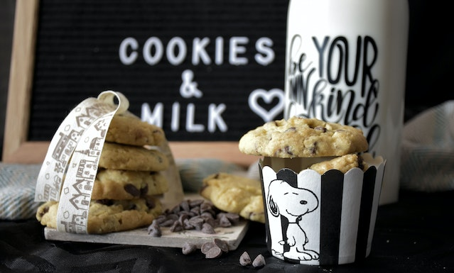

Chocolate chip cookies

Simple classic chocolate chip cookies with a soft gooey center.
Ingredients
- 150g salted butter, softened
- 80g light brown muscovado sugar
- 80g granulated sugar
- 2 tsp vanilla extract
- 1 large egg
- 225g plain flour
- 1/2 tsp bicarbonate of soda
- 1/4 tsp salt
- 200g plain chocolate chips or chunks
Steps
- Heat the oven to 190C and line two baking sheets with non-stick baking paper.
- Put 150g softened salted butter, 80g light brown sugar and 80g granulated sugar into a bowl and beat until creamy.
- Beat in 2 tsp vanilla extract and 1 large egg.
- Sift 225g plain flour, 1/2 tsp bicarbonate of soda and 1/4 tsp salt into the bowl and mix it in with a wooden spoon.
- Add 200g plain chocolate chips or chunks and stir well.
- Use a teaspoon to make small scoops of the mixture, spacing them well apart on the baking trays.
- Bake for 8-10 mins until they are light brown and still slightly soft in the centre.
- Leave on the tray for a couple of mins to set and then lift onto a cooling rack.
Homepage